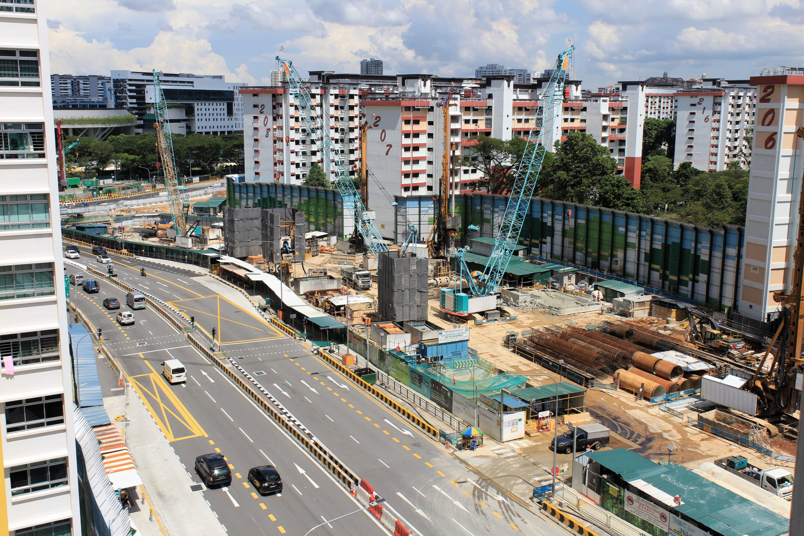
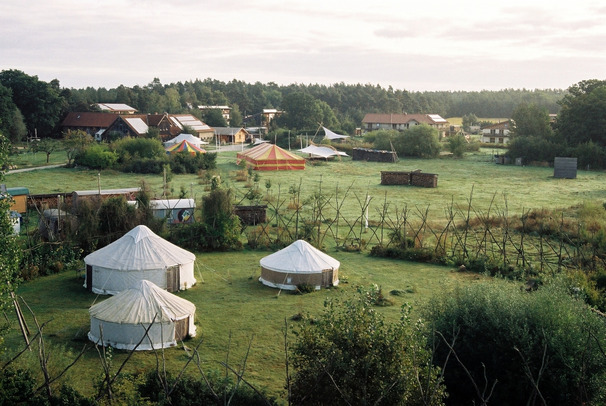
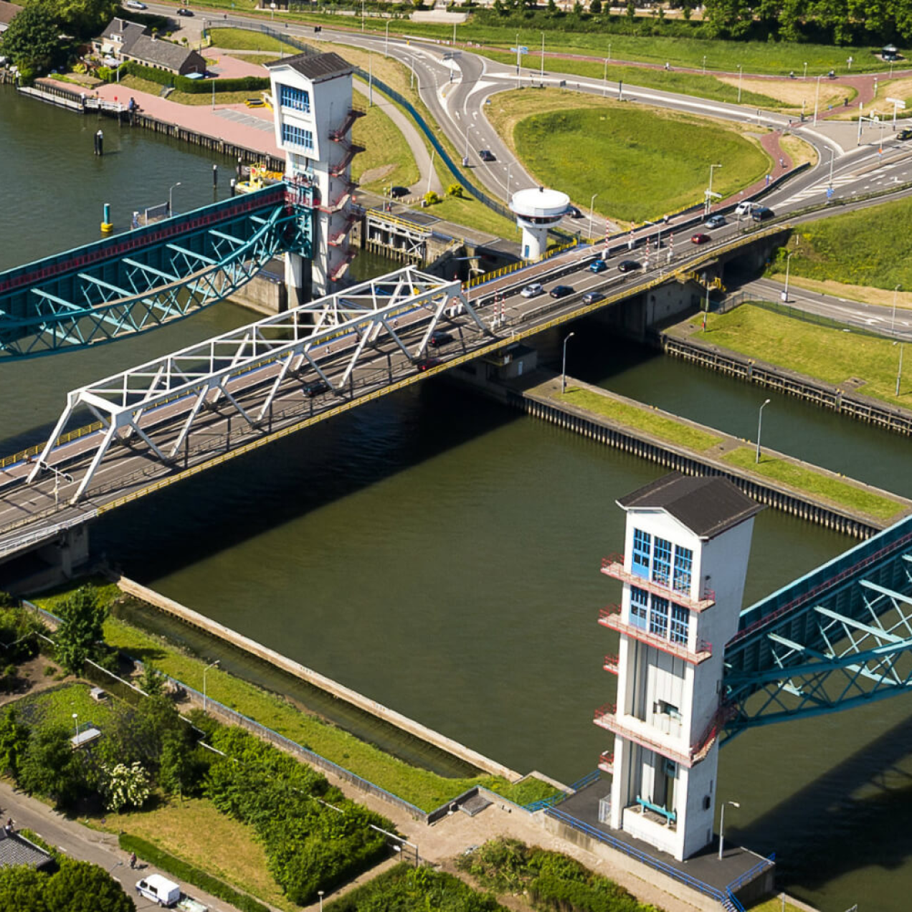

If cities were a person, they would be really overworked person
My demands of the city...
≥ Net ZeroClimate Resilience 🌍Participatory, democraticGreen spaces & wildlife🌱Strong social institutionsAffordable housing 🏠Low unemployment 💼Feel safeAccessible public transport 🚍Multicultural 🫱🏻🫲🏾Meaningful employmentEgalitarianEducation for allWalkableCommunity "3rd space"Universal Health Coverage 🩺Active Ageing 👴🏻DiversityFriendly neighboursClean water 🚰no power outages ⚡fast internet
It is impossible to satisfy myself, let alone everyone...
just like in simscity
the ideal city might just live in our heads
in pure virtual reality...

But in reality, the cities that I know are a WIP: eternally under-construction
Perhaps, we should just accept that demolishing and construction are inherent to every vibrant city
ideal city-life: starting small

Ökodorf Sieben Linden (Germany)
But, i have my doubts
Small communities risk becoming "cultish"
Where do all the materials come from?
Does this city standalone or act as a model for other cities? What if it is infiltrated by other communities? Who is accepted into it?
this doesn't really count as a city, does it?
Perhaps, the ideal city are elements of cities we already have...
Agro-Urbanism
Democracy

Flood Control
Surveillance and Power
Planned City
Organic growth
Human Scale Architecture
Perhaps, the ideal city are elements of cities we already have...
Angkor Wat
Athens
Netherlands
Forbidden City
Jaipur
Old Cairo
Kyoto
perhaps the ideal city is a process
borrowing ideas from elsewhere and morphing to a different state